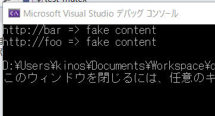

スレッド間で共有されるリソースに対して複数のスレッドから同時に処理を行うと、プログラムの整合性が壊れてしまいます。これを防ぐために共有リソースに対する処理を適切に制御してプログラムの整合性を保つことを
"排他制御" といいます。
ミューテックスと呼ばれる種類のクラスによって共有リソースへアクセスできるスレッドを制限して、排他制御を実現できます。
std::mutex クラスは、スレッド間で排他的なロックの仕組みを提供するミューテックスです。
lock()
メンバ関数を呼び出すと、そのオブジェクトに対してロックをかけられます。既にほかのスレッドがロックをかけている場合は、そのロックが解除されるまで、呼び出し元スレッドの実行はブロックされます。
try_lock() メンバ関数を呼び出すと、ロックを試行できます。ロックの状態によって、以下のようになります。
unlock() メンバ関数を呼び出すと、オブジェクトに対してかけたロックを解除できます。
std::mutex クラスは、再帰的にロックをかけられません。１つのスレッド内で同じオブジェクトに対して lock()
メンバ関数を二度呼び出すと、デッドロックが発生します。
もしこのとき、処理系がデッドロックを検知できるならば、エラーコードに
std::errc::resource_deadlock_would_occur を設定した、
std::system_error
例外が送出されるかもしれません。
[概要]
mutex と lock_guard を使って、シンプルな排他処理を行うプログラムを作成してみます。
[環境]
| コンパイラ : | Visual Studio 2019 pro., | Version 16.6.2 |
| OS: | Windows10 home, | Version 1909 |
[プログラムソース]
#include <iostream> // cout
#include <map> // map
#include <string> // string
#include <chrono> // chrono::seconds
#include <thread> // thread, join
#include <mutex> // mutex, lock_guard
std::map<std::string, std::string> g_pages;
std::mutex g_pages_mutex;
void save_page(const std::string& url)
{
// ページの読み込みに時間がかかるのをシミュレートしています。
std::this_thread::sleep_for(std::chrono::seconds(2));
std::string result = "fake content";
// ミューテックスをロックして g_pages にアクセスします。
std::lock_guard<std::mutex> guard(g_pages_mutex);
g_pages[url] = result;
}
int main()
{
std::thread t1(save_page, "http://foo");
std::thread t2(save_page, "http://bar");
t1.join();
t2.join();
// スレッドが join 済みであるため、ロックなしで g_pages にアクセスしても安全です。
for (const auto& pair : g_pages) {
std::cout << pair.first << " => " << pair.second << '\n';
}
}
[実行結果]

本ページの情報は、特記無い限り下記 MIT ライセンスで提供されます。
|
MIT License Copyright (c) 2020-2022 Kinoshita Hidetoshi Permission is hereby granted, free of charge, to any person obtaining a copy of this software and associated documentation files (the "Software"), to deal in the Software without restriction, including without limitation the rights to use, copy, modify, merge, publish, distribute, sublicense, and/or sell copies of the Software, and to permit persons to whom the Software is furnished to do so, subject to the following conditions: The above copyright notice and this permission notice shall be included in all copies or substantial portions of the Software. THE SOFTWARE IS PROVIDED "AS IS", WITHOUT WARRANTY OF ANY KIND, EXPRESS OR IMPLIED, INCLUDING BUT NOT LIMITED TO THE WARRANTIES OF MERCHANTABILITY, FITNESS FOR A PARTICULAR PURPOSE AND NONINFRINGEMENT. IN NO EVENT SHALL THE AUTHORS OR COPYRIGHT HOLDERS BE LIABLE FOR ANY CLAIM, DAMAGES OR OTHER LIABILITY, WHETHER IN AN ACTION OF CONTRACT, TORT OR OTHERWISE, ARISING FROM, OUT OF OR IN CONNECTION WITH THE SOFTWARE OR THE USE OR OTHER DEALINGS IN THE SOFTWARE. |
| 2022-09-13 | - | ページデザイン更新 |
| 2020-06-13 | - | 新規作成 |